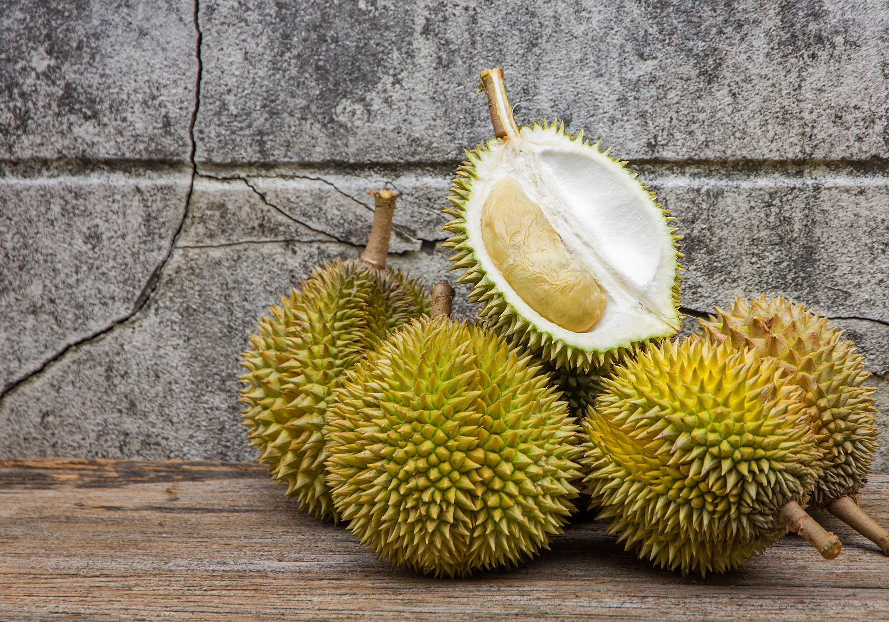

Karipap

Karipap is similiar to dumplings but larger and thicker. The shell is made with thick dough and the inside and filled with meat. My mom usually makes karipap with ground beef and potatoes.
Agar agar
This food is a jelly like substance made from red algae. It is prepared in many colors using food coloring and usually given fruit flavoring. My mom usually prepares this food when we are going to a Malaysian potluck.
Laksa

This food is a sort of fish soup with thick noodles. Usually vegetables and eggs are added for more flavor. I sometimes eat laksa with chopsticks but the noodles are very different from ramen so it is easier to use a fork.
Durian
This spiky fruit is called the "King of Fruits" and is commonly eaten in Malaysia. I do not actully like it myself but my brother will sometimes eat it. The inside of the fruit is infamous to other countries for being unbarebly pungent.